Blender est un logiciel très difficile à prendre en main et, très souvent, de nombreuses personnes abandonnent rapidement celui-ci car elles n'obtiennent pas de résultats satisfaisants. Dans ce tutoriel, nous verrons donc comment obtenir rapidement une belle image qui impressionnera vos amis ! ;)
Pour commencer, ouvrez Blender et supprimez le cube par défaut grâce à la touche "x" ou "Suppr". Rajoutez maintenant la tête de Suzanne dans votre scène. Pour cela, appuyez sur la barre d'espace, et choisissez : add > mesh > monkey. Une tête de singe apparaît, c'est Suzanne ! :D
La tête de Suzanne n'étant pas très belle, nous allons la "smoother" et la "subdiviser" (c'est-à-dire que nous allons lisser les faces et arrondir les angles du modèle). Rendez-vous donc dans le panneau d'édition (F9), et modifiez les caractéristiques de façon à obtenir ceci :
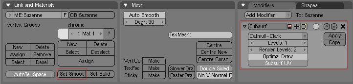
Voilà à quoi devrait ressembler votre scène, maintenant :
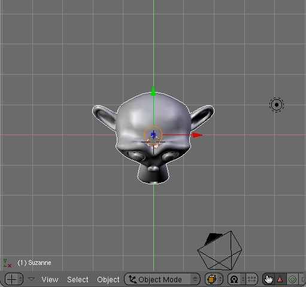
Nous allons maintenant rajouter un "material" à Suzanne. Pour cela, allez dans le panneau des matériaux (F5), cliquez sur "add new" et modifiez les valeurs de cette manière :
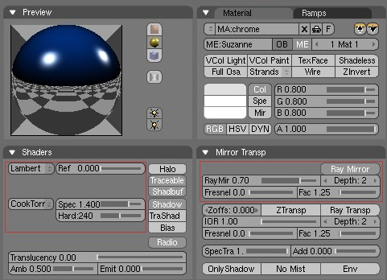
La tête de Suzanne doit devenir noire dans la fenêtre 3d si tout va bien (cela est dû au fait que nous avons diminué la valeur du "ref" dans dans notre "material"). Nous venons de créer un matériau chromé du plus bel effet... ^^
Du plus bel effet ?? o_O Mais si je lance un rendu, je me retrouve avec une chose toute moche au milieu de mon écran !!
C'est normal ! :) La principale caractéristique du matériau que nous venons de créer est qu'il est très réfléchissant. Donc, il reflète son environnement proche et dans notre cas, l'environnement proche est tout bleu : le matériau va donc refléter du bleu, ce qui cause ce rendu pas très... esthétique...
Voilà : la première partie est finie ; j'espère que vous avez suivi car la suite est un petit peu plus compliquée... :-°
C'est là que les choses se compliquent ! ^^ Tout d'abord, rajoutez un plan à votre scène ("add" > "mesh" > "plane"), et déplacez-le juste en-dessous de la tête de Suzanne de cette manière (le plan est en blanc et vu de côté sur l'image) :
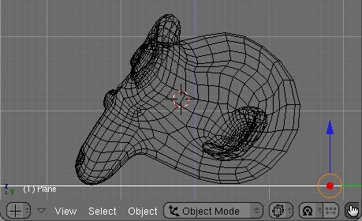
Au niveau de la scène, cela nous donne :
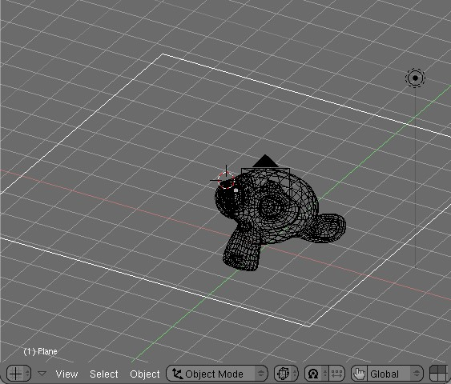
Passons maintenant aux texturing du sol. Commencez donc par créer un nouveau "material" et mettez-lui ces valeurs :
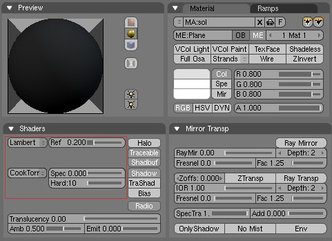
J'ai choisi un "material" très sombre car notre sol sera constitué d'une texture d'asphalte, c'est pour cela que les valeurs du "ref", du "spec" et du "hard" sont très faibles...
Rajoutons maintenant des textures "image" pour faire plus réaliste.
Allez dans l'onglet des textures ("F6"), et cliquez sur "add new" dans le menu déroulant ; choisissez "image", cliquez sur "load image" puis choisissez votre texture de sol.
Hein ?? Notre texture de sol ?? o_O
Eh oui !! Pour plus de réalisme, nous allons utiliser des photos pour notre scène. Heureusement, il existe de nombreuses textures gratuites disponibles sur le web. Je vous conseille cet excellent site : www.cgtextures.com. Pour ma part, j'ai utilisé cette image :
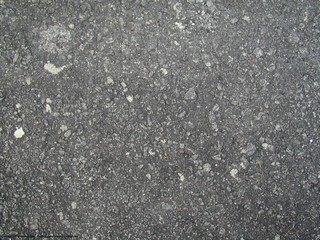
Enregistrez l'image sur votre disque dur et retournez sur Blender. Nous allons placer l'image dans une texture de votre "material" : pour cela, sélectionnez votre plan puis faites "F6". Cliquez sur "add new" et renommez votre texture sol. Maintenant, choisissez "image" dans le petit menu déroulant juste à coté. Un nouvel onglet apparaît à droite. Choisissez le répertoire où vous avez mis la photo de votre texture. Normalement, vous devriez obtenir ceci :
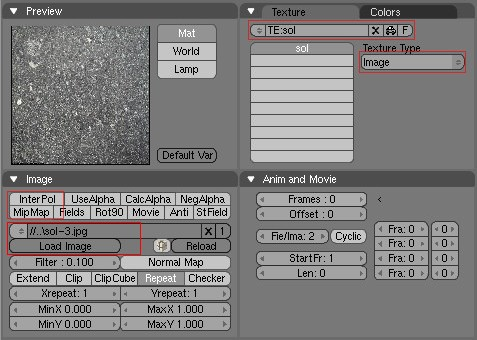
Vous remarquerez que j'ai désactivé les boutons InterPol et Mipmap. Ces boutons permettent d'étirer les textures et de les mélanger avec d'autres textures : il faut les désactiver car nous allons rajouter une autre texture. ;)
Nous allons maintenant rajouter une deuxième texture, toujours sur notre "sol". Il s'agit d'une bump-map.
Si vous avez bien lu le paragraphe ci-dessus, vous l'aurez compris, il faut créer une nouvelle texture. Reprenez donc l'image de texture que vous avez déjà utilisée, et ouvrez-la avec votre logiciel de retouche préféré.
Notre logiciel de retouche ?? :euh:
Eh oui !! Si vous voulez faire de la 3d, sachez qu'un bon logiciel 2d est INDISPENSABLE !! Ce tuto l'illustre parfaitement... ^^ Si vous ne savez pas lequel choisir, il en existe plein de gratuits sur Internet. (Regardez le message qu'a écrit Yash dans la section Graphisme ).
Ouvrez donc le logiciel que vous avez choisi, chargez l'image et transformez-la en noir et blanc (généralement, il s'agit de l'option "niveau de gris"). Modifiez également le contraste avec l'option "contraste automatique". Enregistrez l'image, et vous devriez obtenir quelque chose comme ça :
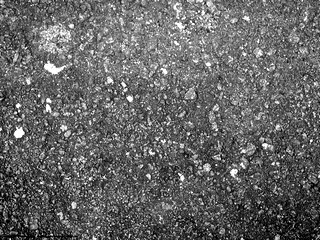
Rajoutons cette image à notre material : c'est exactement le même procédé que pour la première texture :
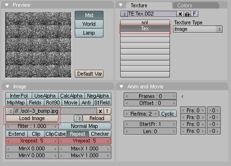
Et dans le panneau des matériaux :
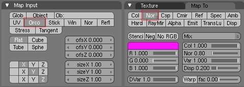
Explications : il y a quelques petites différences par rapport à la première texture. Vous remarquerez que la texture se répète 5 fois selon l'axe des X et 5 fois selon l'axe des Y. J'ai choisi cela de façon purement esthétique et vous pouvez modifier ces valeurs si vous le voulez. :)
Ensuite, j'ai enclenché le bouton nor dans le panneau des matériaux pour que Blender convertisse les niveaux de gris en niveaux de relief.
Et voilà ! Notre texture de sol est finie... :) Je vous l'accorde, c'était un peu compliqué... Mais vous venez peut-être d'aborder pour la première fois des notions importantes dans la 3d : les textures et le bump-mapping. Passons maintenant à la dernière partie du tuto (et non des moindres :-° ) : l'éclairage.
Si vous êtes toujours là, c'est que vous en voulez... Courage ! C'est bientôt fini... :-° . Dans cette dernière partie, nous allons voir comment éclairer notre scène : en effet, dans votre immense impatience vous avez peut-être déjà tenté de lancer un rendu et vous êtes retrouvés avec une image très moche et très sombre... :'( Nous allons arranger ça !
L'image que nous utilisons est une "light probe". C'est grâce à elle que nous pourrons simuler les reflets sur la tête de Suzanne (je l'ai trouvée sur ce site) :
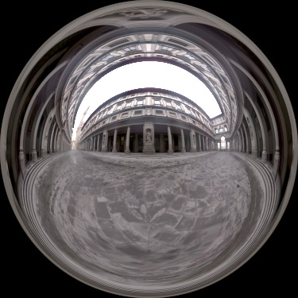
Enregistrez-la sur votre ordinateur et rajoutez une texture image dans votre scène ; maintenant, vous avez l'habitude... :lol:
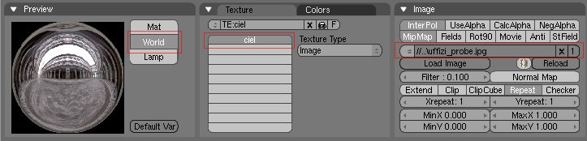
Maintenant, allez dans le panneau d'option "World" (F8) et vous devriez obtenir ceci :D (regardez bien les réglages que j'ai mis : ils sont importants) :
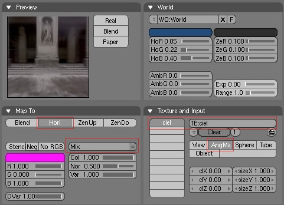
Explications : premièrement, le nom de la texture : il doit être EXACTEMENT le même que celle que nous venons d'ajouter... Choisissez donc un nom simple et facile à retenir (évitez les majuscules, accents, espaces...). Deuxièmement, j'ai enclenché le bouton "AngMap" qui permet au logiciel de savoir quel est le type de LightProbe que nous avons utilisé. En effet, il existe des sphériques, des hémisphériques... Nous, c'est une "angular map", c'est pour cela que l'on coche "angmap"... ^^
Nous y sommes presque !! Le dernier réglage que nous allons faire se situe encore dans le panneau "world". Nous allons rajouter l'Ambient Occlusion pour mieux éclairer la scène.
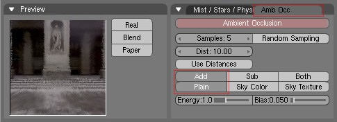
Vous pouvez maintenant faire un rendu (F12). Et tadam !! :magicien: Une belle image doit apparaître... Voilà ce que ça donne chez moi :
Vous vous en êtes sûrement rendus compte, le rendu peut-être très, très long... :colere2: En effet, dans ce tuto, nous utilisons de nombreuses techniques qui augmentent le temps de rendu. Voici quelques conseils pour éviter de passer des jours à calculer votre image :
tout d'abord, ne faites pas de rendus énormes ! Plus c'est gros, plus c'est con long. :lol: Une image en 800 * 600 est amplement suffisante...
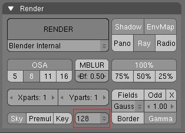
Nous utilisons beaucoup de reflets dans notre image, grâce à une technique qui s'appelle le "raytracing". Là encore, cette technique demande beaucoup de ressources. Vous pouvez diminuer la "précision" du raytracing dans le panneau d'option de rendu (F10) en faisant comme ça :
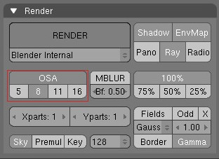
De même que le raytracing, vous pouvez diminuer la valeur de l'OSA (l'anti-crénelage) dans le panneau de rendu. Vous gagnerez ainsi de précieuses minutes de rendu :) :
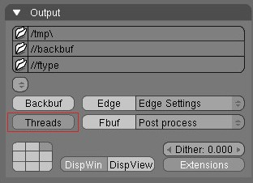
Si votre ordinateur est équipé d'un processeur double-coeur, vous pouvez optimiser la puissance de calcul pour Blender en appuyant sur le bouton "thread", toujours dans le panneau d'options de rendu...
Voilà : le tuto est terminé. J'espère qu'il vous a plu et que le résultat vous satisfait... L'image n'est vraiment pas exceptionnelle, mais cela vous montre que l'on peut faire plein de choses intéressantes avec Blender... :) De plus, nous avons abordé quelques notions un peu plus complexes de la 3d qui pourront toujours vous servir si vous l'aimez.
J'espère avoir été assez clair : ceci était mon premier tuto sur le Site du Zér0... :-° Donc s'il vous reste des questions, MP-moi...